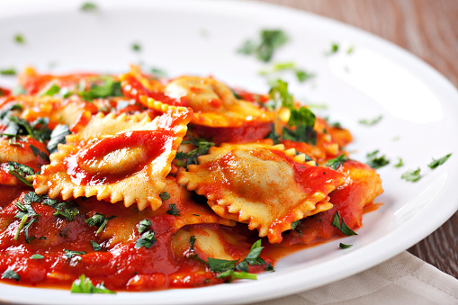

Ravioli

Description
Ravioli is an Italian dumpling that's typically stuffed with ricotta,
meat, cheese, and vegetables. The filling is then sealed between two
thin layers of egg pasta dough and typically served with a delicious
tomato or cream-based pasta sauce.
Ingredients
- 1 (8 ounce) container ricotta cheese
- 1 (4 ounce) package cream cheese, softened
- ½ cup shredded mozzarella cheese
- ½ cup shredded provolone cheese
- 1 egg
- 1 ½ teaspoons dried parsley
Steps
-
Mound the flour and salt together on a work surface and form a well.
Beat eggs, water, and olive oil in a bowl. Pour 1/2 of the egg
mixture into the well. Begin mixing egg and flour with one hand; use
your other hand to keep the flour mound steady. Add the remaining
egg mixture and knead to form a dough.
-
Knead the dough until smooth, 8 to 10 minutes; add more flour if the
dough is too sticky. Form dough into a ball and wrap tightly with
plastic. Refrigerate for 1 hour.
-
While the dough is resting, prepare the ravioli filling. Mix ricotta
cheese, cream cheese, mozzarella cheese, egg, and parsley until well
combined. Set the filling aside.
-
Heat 2 tablespoons of olive oil in a skillet over medium heat. Add
crushed garlic and pesto sauce and cook for one minute. Stir in
heavy cream, increase the heat to high, and bring to a boil. Reduce
the heat and simmer for 5 minutes. Stir in Parmesan cheese until
melted. Remove the pan from the heat and keep warm.
-
Meanwhile, warm marinara sauce over medium-low heat in a separate
saucepan.
- Preheat the oven to 375 degrees F (190 degrees C).
-
Beat the egg with the tablespoon of water to make the egg wash.
-
Roll out the pasta dough into thin sheets no thicker than a nickel.
To assemble the ravioli, brush the egg wash over a sheet of pasta.
Drop cheese filling in 1-teaspoon portions onto the dough, 1-inch
apart.
-
Cover the filling with the top sheet of pasta; use your fingers to
press around each portion of filling, making the seal as airtight as
possible. Cut out individual ravioli with a knife or pizza cutter.
Use your fingers to seal the edges.
-
Fill a large pot with lightly salted water and bring to a rolling
boil over high heat. Stir in the ravioli and return to a boil. Cook
uncovered, stirring occasionally, until the ravioli float to the top
and the filling is hot, 4 to 8 minutes. Drain well.
-
Grease a baking sheet. Place the cooked ravioli on the baking sheet
and bake in the preheated oven until brown, about 4 minutes.
-
To serve, divide ravioli between four warmed serving bowls. Drizzle
marinara sauce on top, followed by cream sauce.